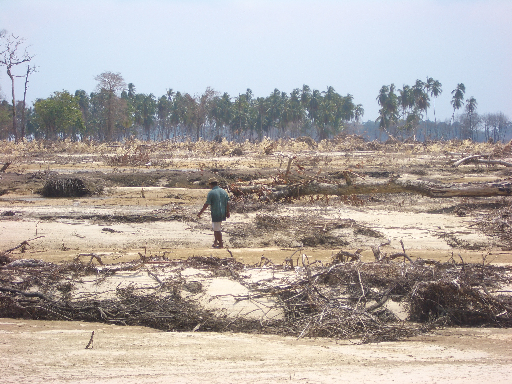

- Title Page
- Introduction
- The Islands and the Anthropologist
- Tsunami and First Response
- Wading In
- Second Tsunami
- In Search of Axes
- Steering a Sustainable Course
- Steering Committee
- Exchange Visit
- Nirnay Means Decision
- Up and Running
- Caritas Leans In
- Singh Sounds a Warning
- Midcourse Correction
- The SOPHIA Experiment
- Taking Stock
- SOPHIA Reports
Caritas Leans In
In these early months, the challenges lay chiefly in law and accounting. The biggest problem was that there existed no legal channel for SIF to disburse its funds in the islands. The NYA had been registered as an official voluntary organization (the Indian equivalent of an NGO), back in 1998the only native organization in the Central Nicobars to be so designated. This status qualified the NYA to receive government funds, and it was for this reason that the NYA became so involved in tsunami relief and reconstruction. But the NYA could not receive foreign funds without a special permit under Indias 1976 Foreign Contribution Regulation Act (FCRA), which provided oversight of foreign transactions to guard against political corruption anddomestic interference. The Indian government was strict about this requirement even after the tsunami, both because the Nicobarese were a protected tribe and because India had military and strategic interests in the islands.
NYA staff and SIF tried repeatedly to obtain a FCRA permit in 2005 and early 2006, but without success. This meant no funds could be transferred from Vienna because no bank could receive them. A cash advance on the 50,000 that had been set aside for the six-month pilot period kept the projects afloat through the winter, though the hostel had to borrow from co-op funds to meet second-semester expenses and Rasheed was soon paying some expenses from his own pocket. Singh was exasperated by the FCRA hang-up and blamed it on nervous bureaucrats in the Andaman and Nicobar administration who were reluctant to sign the required affidavit of no objection, possibly because of concerns about the security of military sites on the islands. The matter is not as serious as it looks, Singh wrote in the spring as he documented the run-around.
The file goes around in circles from one office to another, each asking for comments from the other, and nobody willing to sign and settle the matter. The file is akin to a virus that everyone wants to get rid of from his/her desk as soon as possible, lest they contract the disease. [49]

Simron Singh
Tsunami damage
Caritas was less sanguine about the situation. As the financial manager for SIF and liaison to the donors, it was Caritass job to see that the SIF fund was spent well and wisely. Altenburg remained patient through the February 2006 meeting of the Steering Committee, but by April Caritas began applying pressure as its first-year audit report to Neighbor in Need came due. By then it had become clear that the Nicobarese were terrible bookkeepers. Having had little need to manage cash in the traditional economy, they now found it difficult to account for their project expenses. As Fischer-Kowalski puts it, Bookkeeping was an absolutely alien exercise for them.

Georg Matuschkowitz, Caritas
SIF had anticipated this problem and had spelled out reporting requirements in its partnership agreements with the Tribal Council and the NYA the summer before. The Nicobarese were expected to, for example, fax bank documents acknowledging all monies received, document exchange rates, account for expenditures according to approved budget lines, and submit stamped receipts for all expenditures over 5. None of that happened. Instead SIF received polite requests for supplies that carried no cost itemization, like the wish list for hostel improvements submitted that winter by Mercy Thomas, one of the NYA exchange visit delegates: 20 mattresses, 20 desks and chairs, 4 bookracks, 2 computers, a carom board, etc. [50] Only Rasheed, who had experience running his own business enterprises, provided any sort of cost accounting, specifying, for example, 8,000 rupees for weighing scales for the co-ops and 4,000 rupees for the cash drawer. [51]
In the face of these accounting deficiencies, Caritas wrote back to the NYA, pointing out the errors and omissions, requesting better documentation and asking that the Nicobarese try again. Relations became a little strained over the winter, but Caritas was indulgent, convinced that SIF was a special project that required time and special handling. As Altenburgs successor Georg Matuschkowitz explains:
We were responsible to Neighbor in Need, and through them to the individual donors, and we had very strict financial and reporting guidelines. This is something which maybe was not so clear at the beginning for the institute, which was coming at the project from the direction of how best to support self-determination in the Nicobarese. [52]
Matuschkowitz on accounting issues
It was left to Ramanujam, the Indian field assistant who did much of the administrative and accounting work for the NYA in this period, to articulate the Nicobarese feelings on the matter: having promised help, SIF now demanded accounting. It seemed to the Nicobarese a funny kind of gift. If the money was charity, why did they have to account for their spending at all? [53]
[49] Simron Jit Singh, Field Report/Evaluation of the Situation in the Nicobars, March-May 2006, in SIF files.
[50] Mercy Thomas, Project Management, NYA, SIF-Sponsored Hostel for Nicobari Students, A Note, (undated, late fall 2005 or early winter 2006), in SIF files.
[51] Rasheed Yusuf, op. cit.
[52] Lundberg interview with Georg Matuschkowitz on February 25, 2014, in Vienna. Haas, the exchange visit facilitator, was more direct. There were a lot of tensions between Caritas and our institute throughout the project, he says. In his view, as a top-level NGO Caritas was structurally driven to want big spending, fast timetables, clean books, and measurable results because these would satisfy current donors and attract future funds. By this NGO logic, local situations and native understandings would almost always take a back seat.
[53] Ramanujams thesis, op. cit., which considers the Nicobars story from the point of view of gift theory, includes a nice account of the audit culture governing NGO work.